Metronoommodus
De belangrijkste functie voor het afspelen van klikgeluiden die synchroon lopen met uw tempo. Pas de BPM aan door het getal naar links of rechts te slepen, of door op de +/− knoppen te tikken. Tik herhaaldelijk om de BPM automatisch te meten op basis van uw tikintervallen. Wijzig maatsoorten, geluidssets en ritmepatronen met speciale knoppen. Pas het totale volume aan met de volumeschuifregelaar en stel een oefentimer in.
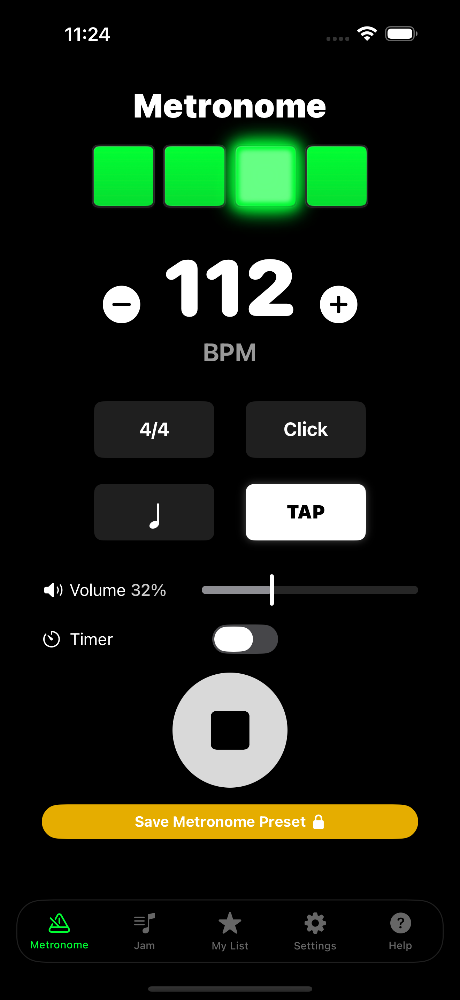
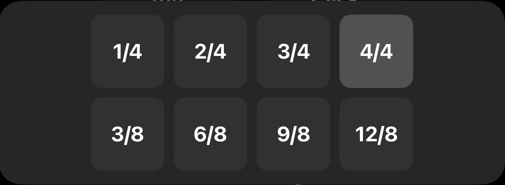
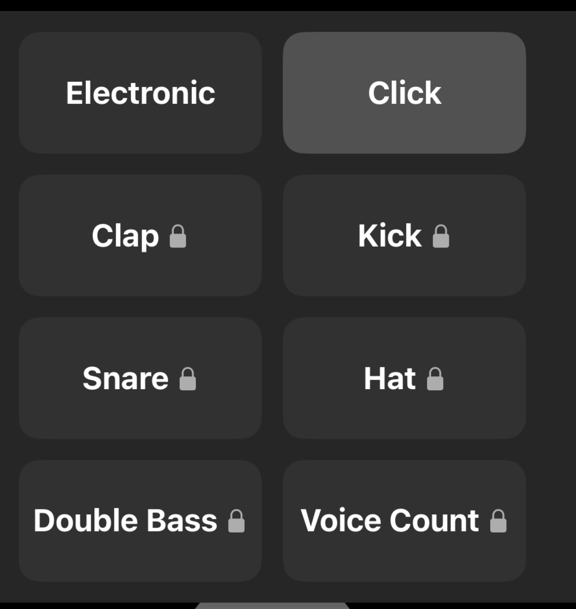
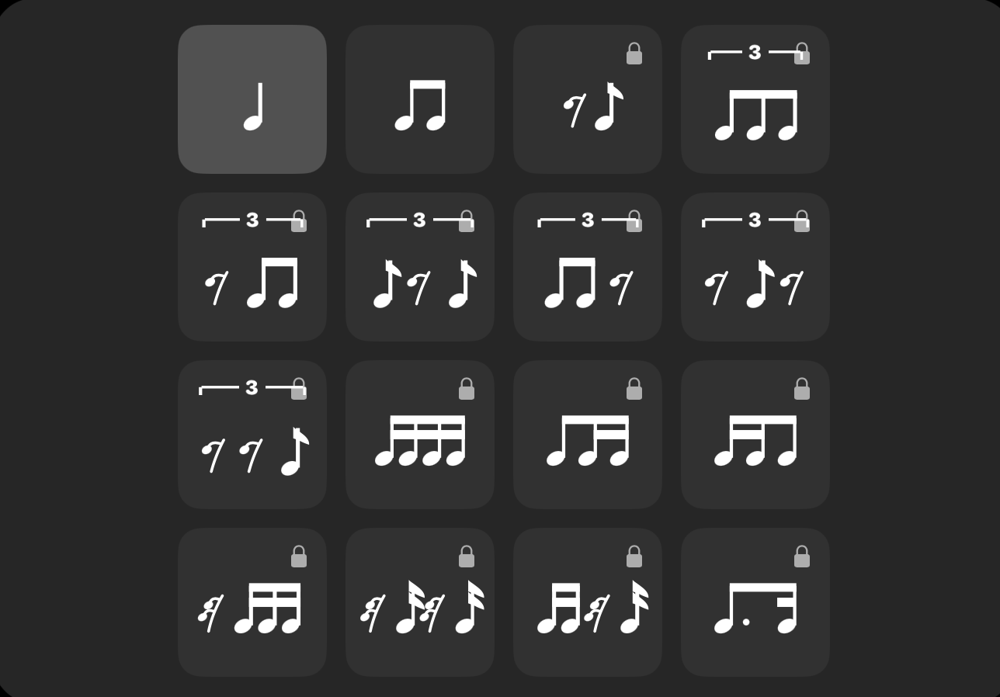
Jam-modus (Ritmeloop)
Een drumloopfunctie met drie onderdelen: hihat, snare en kick. Tik bovenaan op de naam van de voorinstelling om een genre te selecteren, of maak uw eigen beatpatroon met de 16-stapssequencer. Stel de volumebalans en swing in met schuifregelaars.
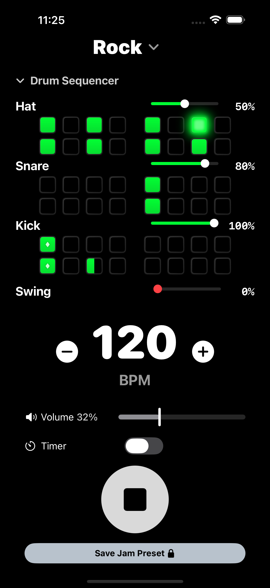
Mijn voorinstellingen
Sla tot 100 van uw favoriete metronoom- en jam-instellingen op met aangepaste namen. Tik eenvoudig op een opgeslagen voorinstelling om alle instellingen direct op te roepen.
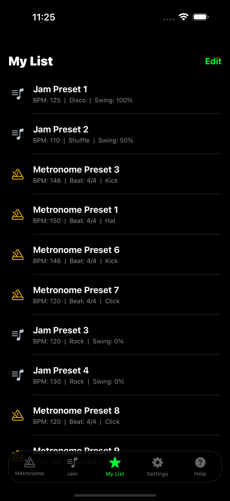
Apple Watch-ondersteuning
- Afspelen/Stoppen, BPM wijzigen en schakelen rechtstreeks op de Apple Watch
- Haptische feedback op de Apple Watch maakt het mogelijk om stilletjes in het ritme mee te tikken
- Houd het ritme nauwkeurig bij met haptische feedback om de pols
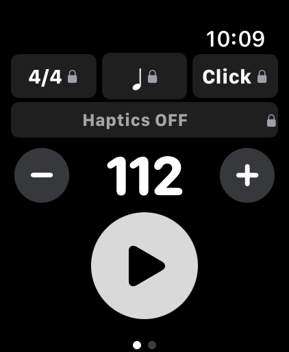
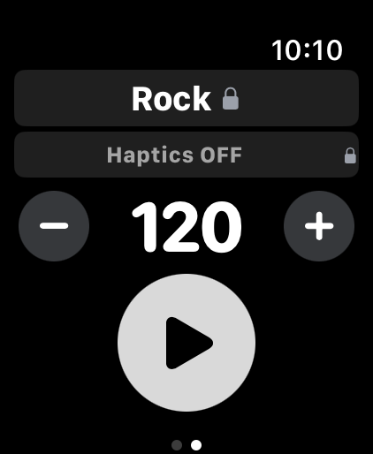
Aanpassing
Pas het uiterlijk en het algemene gedrag van de app aan. Kies de weergavemodus en kleurthema's en schakel iPhone-trillingen, de schermflitser of Apple Watch-trillingen in of uit.
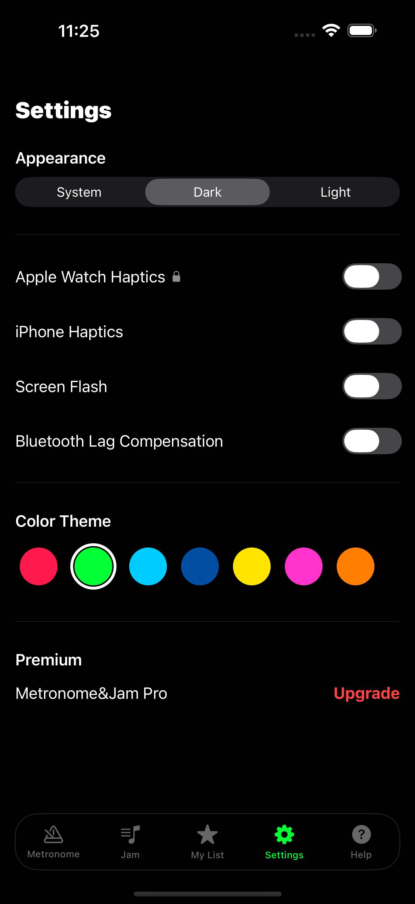
iPad Split View-ondersteuning
Pas de grootte van de app vrij aan om deze als handige mini-speler naast uw bladmuziek of andere muziekapps te gebruiken.
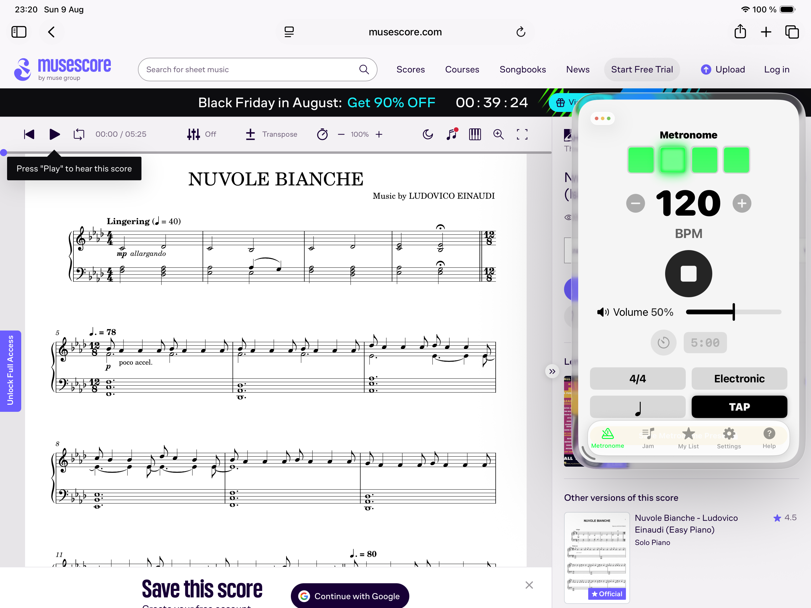
Pro-versie (Eenmalige aankoop)
Upgrade naar Pro om alle premiumfuncties te ontgrendelen, waaronder alle geluidssets, ritmes, opslag van voorinstellingen en Apple Watch-integratie. Een eenmalige aankoop geeft u levenslang toegang.
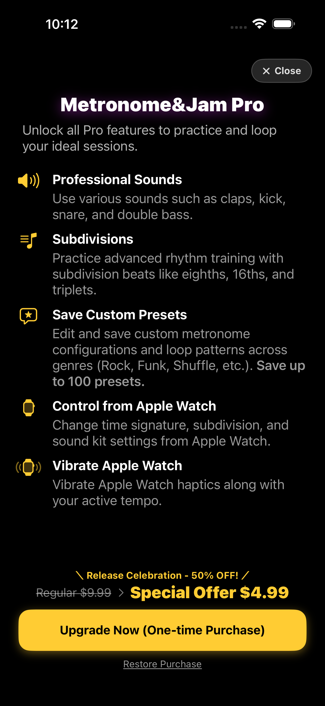
Klaar om muziek te maken?
BINNENKORT VERKRIJGBAAR